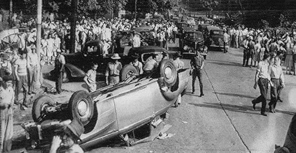

The Battle of Athens
The battle of Athens truly began on August 1st after Tom Gillespie, an African American man attempted to vote but was beaten with brass nuckels and shot in the back, wounded yet alive. Sheriff Mansfield ordered the polling station to be closed, although during the commotion the deputies took two poll workers hostage, Charles Scott and Ed Vestal. There are multiple accounts as to what happened next, some say Scott and Vestal jumped through a window to escape, some say guns were drawn, some say they broke through a back door but either way the escape ended with gunfire. This event caused Sheriff Mansfield to order them arrested and sent deputies out to find them, however these deputies and a few more were taken hostage by the GIs who took them to a forest and beat them. At another polling station another veteran poll watched attempted to stop an underaged woman from voting but was beaten for this and take to the hospital. Due to all that had happened during the day, Bill White who was the leader of the GIs ordered Edsel Underwood and a few others to break into the National Guard armory and arm themselves leading to the GIs having a hodgepodge of weapons. With a need to resolve this issue quickly and the Sheriff having taken the ballot boxes to the jail the GIs beseiged the jail which had 50 deputies, Paul Cantrell, Pat Mansfield and George Woods inside.
The amount of GIs that besieged the jail vary with estimates ranging from a few hundred to 2,000. The veterans demanded the ballot boxes but the deputies refused leading to a battle that lasted anywhere from six hours to much less depending on who you ask. The GIs attempted to toss molotovs at the jail but couldn't reach it and resorted to tossing dynamite at the jail and vehicles. It's reported that by 3:30 am the deputies inside had surrendered, handing over the ballot boxes. During the battle there was also rioting throughout town mainly targeting police cars, especially those of out of state deputies but nothing more major than this.